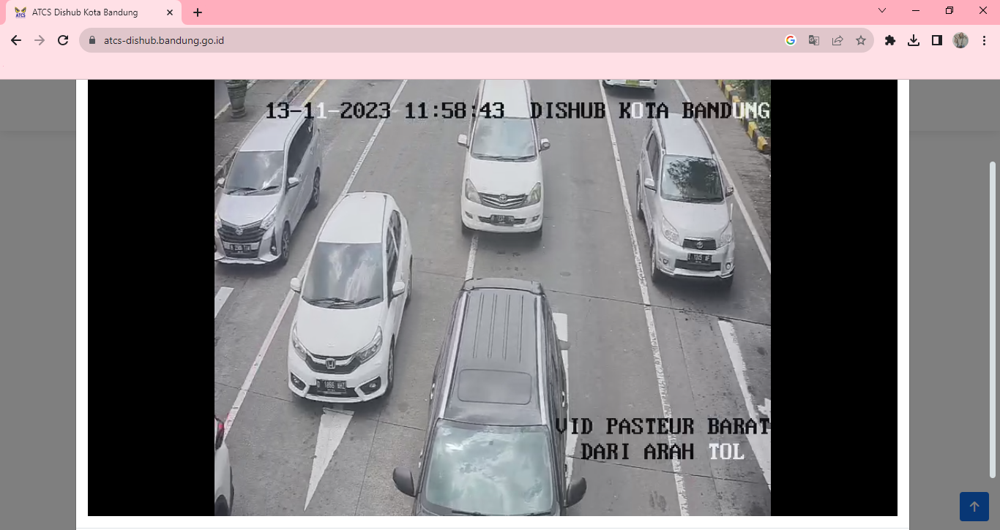
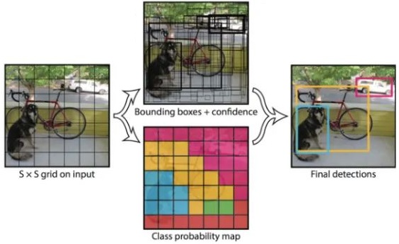

Portfolio Details
Project information
- Domain: Computer Vision (CV)
- Category: Deep Learning
- Video Testing: Vehicle Detection
- Technical Skills: Streamlit, Python, YOLO Algorithms
- Data Source: CCTV ATCS Kota Bandung
Detection, Classification, Tracking, and Counting of Vehicle Types
Large vehicles can impact traffic flow, leading to a reduction in vehicle speed. One potential solution to address this issue is the development of a system that integrates the processes of calculation, classification, and tracking for various types of vehicles. In response to this problem, the authors propose a system that automatically estimates traffic density based on vehicle types. The categories of vehicles analyzed include mini buses, trucks, SUVs-MPVs, pick-ups, and buses. Bandung, as the capital city of West Java, attracts significant interest from various sectors, resulting in high mobility. Consequently, the research location is selected in Bandung city, and system testing is conducted using video recordings from the CCTV ATCS.
Object detection is a complex and crucial field within Computer Vision (CV), involving both object classification and localization. This process aims to accurately determine the position of objects and identify various predefined object categories. Currently, in the field of computer vision and deep learning, various algorithms are widely used to classify images within datasets. You Only Look Once (YOLO) has become one of the most popular deep learning frameworks, featuring an open-source library based on PyTorch and utilizing a single-stage method for object detection. YOLO operates by dividing the input image into a grid of size SxS and generating predictions for bounding boxes and object class probabilities, as illustrated in the image below.
The author utilizes YOLOv8, the eighth version of YOLO, released in January 2023 by Ultralytics. YOLOv8 is used as the detection algorithm and combined with BoTSORT for tracking. YOLOv8 offers improvements in object detection accuracy and speed compared to previous versions. BoTSORT, a reliable tracking-by-detection algorithm, ensures effective multi-object tracking. The combination of these two algorithms enables efficient monitoring by detecting and tracking various types of vehicles in real-time.
The annotated vehicle dataset consists of 1,165 images, divided into 70% training data, 20% testing data, and 10% validation data. This dataset division is designed to ensure that the model learns effectively while preventing overfitting and underfitting. The training data is used to train the model, the validation data is responsible for evaluating model performance during training and optimizing hyperparameters, while the testing data is utilized to assess the final accuracy of the model on previously unseen data.
After the data is processed, the next step is to determine the hyperparameters for model training according to specific needs. The author uses the YOLOv8 Nano model with an image size of 640 to ensure consistency and sets the number of epochs to 100. Proper selection of hyperparameters aims to enhance model accuracy and ensure efficient convergence. To facilitate the model training process and minimize computational load, Google Colaboratory with free access to Tesla T4 GPUs is utilized. After the training process is completed, resulting Precision (P), Recall (R), mAP50, and mAP50-95 values close to 1 indicate that the model exhibits strong object detection performance. These values also suggest that the model effectively learns from the training data, enabling accurate and consistent object identification across various conditions.


Then, the author designed a simple website interface using the Python-based Streamlit library, utilizing Visual Studio Code, to deploy the trained model in combination with BoTSORT. This website provides a feature for uploading CCTV vehicle video recordings for system testing. The system is capable of detecting objects within the uploaded videos and saving the detection results. Additionally, the interface allows users to view the detection results in real-time and analyze system performance.